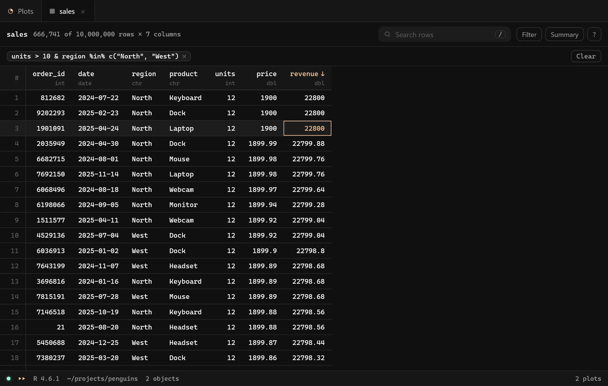

Variables and tables
The variables pane lists the objects in your session after every command. View() opens any table in a viewer that asks DuckDB for one page at a time, so a table with millions of rows opens at once.
The variables pane
The pane under the console updates after every command, yours or your agent's, and follows the console when you restart R or switch to Python. It lists your objects, including plots saved in variables (ggplot, lattice, patchwork).
The objects are sorted into five tabs: Data (data frames), Plots (plot objects), Values, Functions and Other. Move between them with ← →, Tab, the keys 1 to 5, or a click. / searches.
Enter on an object
| Object | What Enter does |
|---|---|
| A data frame | Opens the table in the viewer, like View(). m opens it in Mirador instead. |
| A plot object | Draws it and opens it in Mirador. A plot that is already drawn opens without being drawn again. |
| Anything else, in R | Runs str() on it in the console. |
| A function, in Python | Shows its help in the console (name?). |
| Anything else, in Python | Prints it in the console. |
The history of everything you drew isn't in this pane: it is in Mirador (ctrl+b f).
A bigger view
ctrl+b d (corral vars) opens the variables over the terminal, with the same keys; q closes it. If your layout has no variables pane, corral vars --split adds one under the R console.
In R, objects with more than a million elements don't show their size in memory, because computing it after every command would be slow. To stay fast, Corral describes a variable again only when the object changed (another address in memory, another length, other dimensions or, in tables, other column types).
Variables for agents
$ corral vars --json
$ corral vars --json --lang pythonThis prints the objects in the session (name, kind, class, dimensions or a preview, size) as JSON, without typing anything in the console. Without --lang it lists the console in view. Corral's skill tells agents to use it before running code, so it doesn't guess names or overwrite your objects.
The table viewer
View(df) (in R or in Python), Enter on a data frame in the variables pane, or corral view on a file open the table over the terminal, in a viewer that queries the file with DuckDB.
The session saves the table as parquet, and the viewer asks DuckDB only for what is on screen: a page of rows, the row count, a sort or a search are each a query of a few milliseconds. With 10 million rows, saving the table takes about a second with nanoparquet (two with arrow), and the first screen about 14 ms more. The viewer itself uses about 3 MB, and DuckDB, which stays open while you use the table, about 35 MB (up to about 100 MB after sorting every row); it closes 30 seconds after the last query (measurements).
▸▸ sales 10,000,000 rows · 7 columns order_id date region product units price revenue integer date varchar varchar integ… double double 1 1 2025-12-09 East Headset 7 241.42 1689.94 2 2 2024-09-14 West Monitor 3 848.36 2545.08 3 3 2024-08-17 East Dock 11 1335.13 14686.43 4 4 2024-10-07 South Headset 1 1231.24 1231.24 5 5 2025-12-03 South Laptop 3 650.69 1952.07 6 6 2025-07-07 North Webcam 2 716.53 1433.06 7 7 2025-03-28 South Keyboard 5 532.7 2663.5 8 8 2024-09-05 West Dock 1 657.58 657.58 9 9 2025-09-22 West Keyboard 11 559.68 6156.48 10 10 2025-12-29 West Keyboard 10 690.15 6901.5 11 11 2025-03-30 West Dock 9 791.22 7120.98 12 12 2025-04-26 Central Monitor 2 534.37 1068.74 13 13 2025-10-22 North Keyboard 4 1092.59 4370.36 14 14 2025-07-17 North Monitor 8 106.77 854.16 15 15 2024-06-04 West Webcam 12 1068.48 12821.76 16 16 2024-06-30 East Monitor 7 1485.02 10395.14 17 17 2024-06-13 North Headset 8 1421.45 11371.6 18 18 2025-04-22 West Keyboard 3 688.5 2065.5 19 19 2024-01-11 South Mouse 5 1734.62 8673.1 20 20 2024-08-25 West Monitor 3 1070.4 3211.2 / search · f filter · = equal to the cell · x clear filters · s sort · Enter row · i summary · m Mirador · Sh…
$ corral view data/sales.parquetcorral view opens parquet, CSV and JSON files; --title sets the title. In Python, View() takes pandas, polars or pyarrow tables and saves them as parquet: the console comes with pyarrow, so pandas tables do too. In R, it writes parquet with nanoparquet, which the installer adds, or arrow; without either, it uses CSV, which is much slower with big tables (about 13 s for ten million rows, and up to three quarters of a second each screen).
Each View() saves a temporary copy of the table, so a long session doesn't fill your disk: a new View() of the same object replaces its copy, and each session keeps the copies of its latest 20 tables, up to 2 GB in all. Mirador closes the tab of a table whose copy is gone. A file you open with corral view is never deleted.
Keys
| Key | Action |
|---|---|
| ↑ ↓, PgUp PgDn, g G | Move through the rows (the mouse wheel too) |
| ← →, 0 $ | Move through the columns; with the mouse, the horizontal wheel, a sideways swipe on the trackpad, or Shift and the wheel |
| s (or a click on the header) | Sort by the column: ascending, descending, unsorted |
| / | Search a text in every column; / and an empty Enter clear the search |
| f | Filter with a condition; it starts with the name of the current column |
| = | Keep only the rows with the value of the selected cell |
| x | Remove every filter and the search |
| Enter | See the whole row |
| i | Summary of each column (DuckDB's SUMMARIZE) |
| m | Open the table in Mirador, in your browser; the viewer stays open |
| q | Close |
Filters
A filter takes R or DuckDB's SQL:
mpg > 20 & cyl == 6
region %in% c("a", "b")
!is.na(x)
region LIKE 'nor%'Filters add up, with each other and with the search, and the top line says which ones are active and how many rows are left. If a filter has an error, it isn't applied, and DuckDB says why.
Tables in Mirador
The terminal is the default, and Mirador opens a table only when you ask, for example when you want more room for a wide one. Any of these does it:
- m in the table viewer, or on a data frame in the variables pane;
View(df, mirador = TRUE)in R,View(df, mirador=True)in Python;corral view FILE --mirador.
Mirador opens the same file in a tab of its own, and the table works as in the terminal, with the same DuckDB queries and the same keys: / searches, f adds a filter in R or SQL, = keeps the rows equal to the selected cell, s sorts (a click on a header too), x clears, Enter shows the whole row and i the summary. Each filter shows as a label you can remove with its ×, and the top line says how many rows are left. Every tab keeps its filters, sort and position while you look at another one.

10 and two regions, sorted by revenue">Outside herdr, View() opens tables in Mirador when Mirador is running; CORRAL_VIEW changes that (see Configuration).
Tables from View() are saved in R's (or Python's) temporary folder, and they go away when you close the console.
SQL
Tables are a query away too: SQL runs on DuckDB in your session, your data frames are its tables, and each result is a data frame in the variables pane. SQL has it all.
VisiData instead
If you prefer VisiData and have it installed (vd), tables open there, with Corral's colors:
$ corral config table_viewer visidataAny other value, such as corral, goes back to Corral's viewer. To use a viewer of your own, set CORRAL_TABLE_VIEWER to its command; {file} is replaced by the table's path.